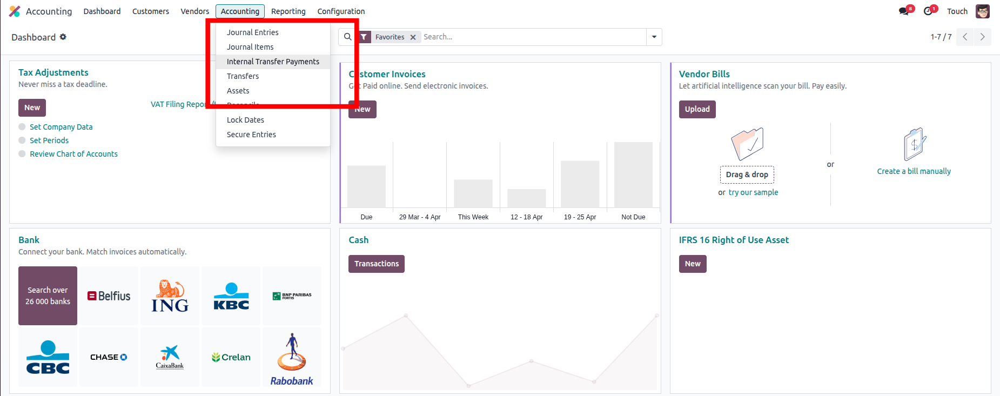
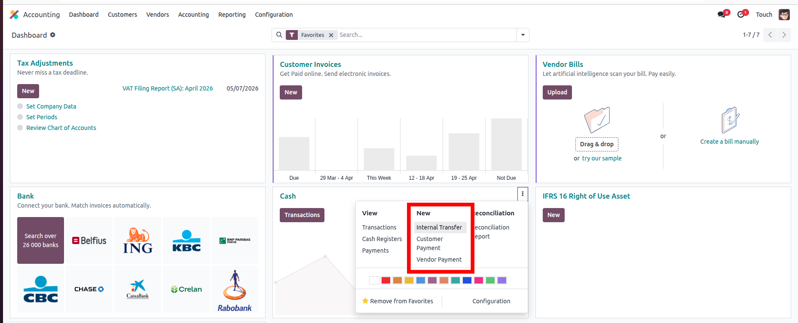
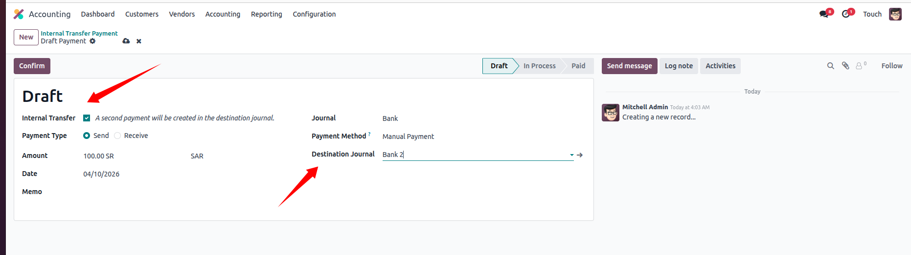
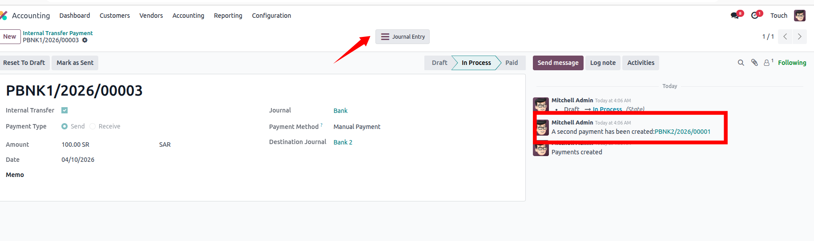
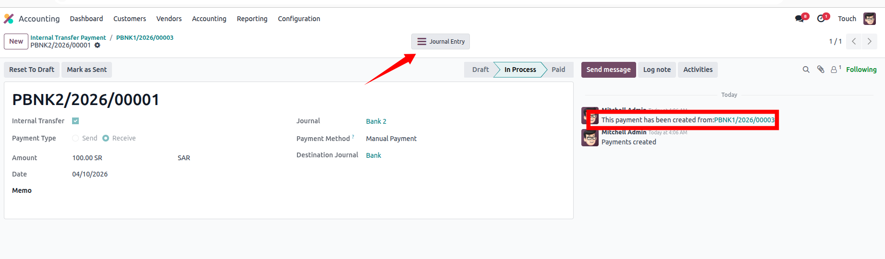

Simplify and control internal transfers between journals in Odoo
This module enhances the default accounting workflow by providing a more structured and transparent way to manage internal transfers between journals like older versions.
Easily move funds between journals with a clean workflow.
Track both sides of every internal transfer clearly.
Reduce manual steps and improve accounting efficiency.





Take full control of internal transfers with a professional solution.
For support or customization, contact us at:
Touch Business Solutions
https://finaltouches.sa